Functions/Subroutines | |
| subroutine | lphysiol_full (can_prss, can_rhos, can_shv, can_co2, ipft, leaf_par, leaf_temp, lint_shv, green_leaf_factor, leaf_aging_factor, llspan, vm_bar, leaf_gbw, A_open, A_closed, A_light, A_rubp, A_co2, gsw_open, gsw_closed, lsfc_shv_open, lsfc_shv_closed, lsfc_co2_open, lsfc_co2_closed, lint_co2_open, lint_co2_closed, leaf_resp, vmout, comppout, limit_flag) |
| subroutine | comp_photo_tempfun (leaf_aging_factor, green_leaf_factor) |
| subroutine | photosynthesis_exact_solver (limit_flag) |
| subroutine | solve_aofixed_case (answer, success) |
| subroutine | solve_iterative_case (answer, converged) |
| subroutine | set_co2_demand_params (whichlim) |
| subroutine | iter_solver_step (newton, lint_co2, fun, deriv) |
| real(kind=8) function | calc_co2_demand (lint_co2) |
| real(kind=8) function | calc_co2_demand_prime (lint_co2, co2_demand) |
| real(kind=8) function | calc_stom_cond_h2o (lint_co2, co2_demand) |
| real(kind=8) function | calc_stom_cond_h2o_prime (lint_co2, stom_cond_h2o, co2_demand, co2_demand_prime) |
| subroutine | find_lint_co2_bounds (cimin, cimax, bounded) |
| real(kind=8) function | arrhenius (temp, refval, hor) |
| real(kind=8) function | collatz (temp, refval, q10) |
| real(kind=8) function | find_twilight_min () |
Variables | |
| real(kind=8), parameter | discard = huge(1.d0) |
| real(kind=8), parameter | tolerfl8 = toler8 |
| integer, parameter | maxfpofl = 320 |
Function/Subroutine Documentation
◆ arrhenius()
| real(kind=8) function farq_leuning::arrhenius | ( | real(kind=8), intent(in) | temp, |
| real(kind=8), intent(in) | refval, | ||
| real(kind=8), intent(in) | hor | ||
| ) |
Here is the caller graph for this function:
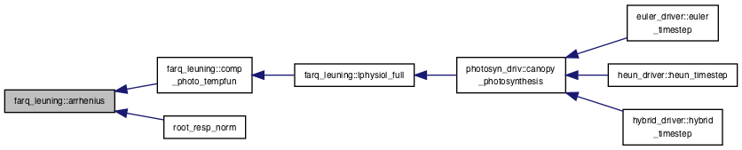
◆ calc_co2_demand()
| real(kind=8) function farq_leuning::calc_co2_demand | ( | real(kind=8), intent(in) | lint_co2 | ) |
Here is the caller graph for this function:
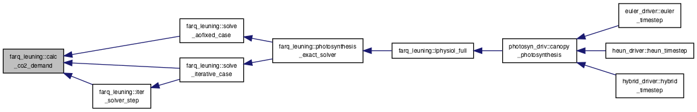
◆ calc_co2_demand_prime()
| real(kind=8) function farq_leuning::calc_co2_demand_prime | ( | real(kind=8), intent(in) | lint_co2, |
| real(kind=8), intent(in) | co2_demand | ||
| ) |
Here is the caller graph for this function:
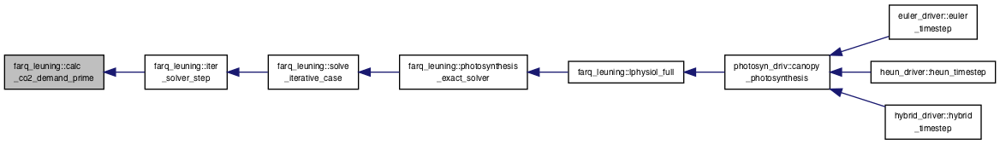
◆ calc_stom_cond_h2o()
| real(kind=8) function farq_leuning::calc_stom_cond_h2o | ( | real(kind=8), intent(in) | lint_co2, |
| real(kind=8), intent(in) | co2_demand | ||
| ) |
Here is the caller graph for this function:
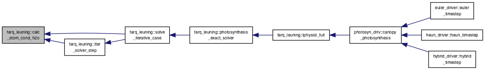
◆ calc_stom_cond_h2o_prime()
| real(kind=8) function farq_leuning::calc_stom_cond_h2o_prime | ( | real(kind=8), intent(in) | lint_co2, |
| real(kind=8), intent(in) | stom_cond_h2o, | ||
| real(kind=8), intent(in) | co2_demand, | ||
| real(kind=8), intent(in) | co2_demand_prime | ||
| ) |
Here is the caller graph for this function:

◆ collatz()
| real(kind=8) function farq_leuning::collatz | ( | real(kind=8), intent(in) | temp, |
| real(kind=8), intent(in) | refval, | ||
| real(kind=8), intent(in) | q10 | ||
| ) |
Here is the caller graph for this function:
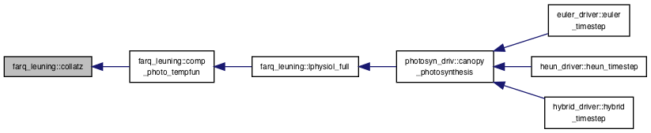
◆ comp_photo_tempfun()
| subroutine farq_leuning::comp_photo_tempfun | ( | real(kind=4), intent(in) | leaf_aging_factor, |
| real(kind=4), intent(in) | green_leaf_factor | ||
| ) |
Here is the call graph for this function:
Here is the caller graph for this function:
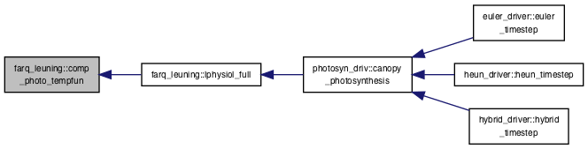
◆ find_lint_co2_bounds()
| subroutine farq_leuning::find_lint_co2_bounds | ( | real(kind=8), intent(out) | cimin, |
| real(kind=8), intent(out) | cimax, | ||
| logical, intent(out) | bounded | ||
| ) |
Here is the caller graph for this function:
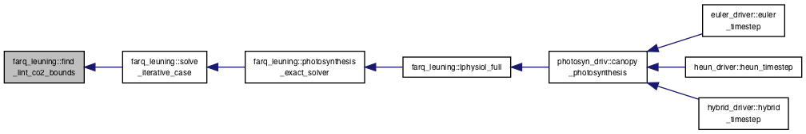
◆ find_twilight_min()
| real(kind=8) function farq_leuning::find_twilight_min | ( | ) |
Here is the caller graph for this function:
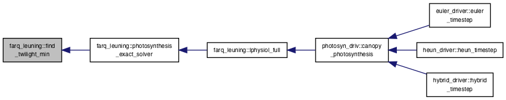
◆ iter_solver_step()
| subroutine farq_leuning::iter_solver_step | ( | logical, intent(in) | newton, |
| real(kind=8), intent(in) | lint_co2, | ||
| real(kind=8), intent(out) | fun, | ||
| real(kind=8), intent(out) | deriv | ||
| ) |
Here is the call graph for this function:
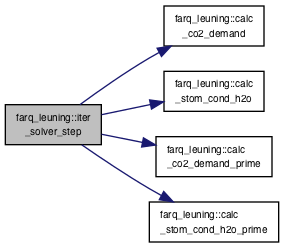
Here is the caller graph for this function:
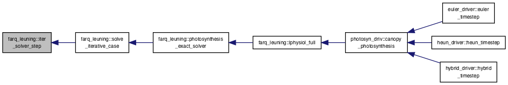
◆ lphysiol_full()
| subroutine farq_leuning::lphysiol_full | ( | real(kind=4), intent(in) | can_prss, |
| real(kind=4), intent(in) | can_rhos, | ||
| real(kind=4), intent(in) | can_shv, | ||
| real(kind=4), intent(in) | can_co2, | ||
| integer, intent(in) | ipft, | ||
| real(kind=4), intent(in) | leaf_par, | ||
| real(kind=4), intent(in) | leaf_temp, | ||
| real(kind=4), intent(in) | lint_shv, | ||
| real(kind=4), intent(in) | green_leaf_factor, | ||
| real(kind=4), intent(in) | leaf_aging_factor, | ||
| real(kind=4), intent(in) | llspan, | ||
| real(kind=4), intent(in) | vm_bar, | ||
| real(kind=4), intent(in) | leaf_gbw, | ||
| real(kind=4), intent(out) | A_open, | ||
| real(kind=4), intent(out) | A_closed, | ||
| real(kind=4), intent(out) | A_light, | ||
| real(kind=4), intent(out) | A_rubp, | ||
| real(kind=4), intent(out) | A_co2, | ||
| real(kind=4), intent(out) | gsw_open, | ||
| real(kind=4), intent(out) | gsw_closed, | ||
| real(kind=4), intent(out) | lsfc_shv_open, | ||
| real(kind=4), intent(out) | lsfc_shv_closed, | ||
| real(kind=4), intent(out) | lsfc_co2_open, | ||
| real(kind=4), intent(out) | lsfc_co2_closed, | ||
| real(kind=4), intent(out) | lint_co2_open, | ||
| real(kind=4), intent(out) | lint_co2_closed, | ||
| real(kind=4), intent(out) | leaf_resp, | ||
| real(kind=4), intent(out) | vmout, | ||
| real(kind=4), intent(out) | comppout, | ||
| integer, intent(out) | limit_flag | ||
| ) |
Here is the call graph for this function:

Here is the caller graph for this function:

◆ photosynthesis_exact_solver()
| subroutine farq_leuning::photosynthesis_exact_solver | ( | integer, intent(out) | limit_flag | ) |
Here is the call graph for this function:
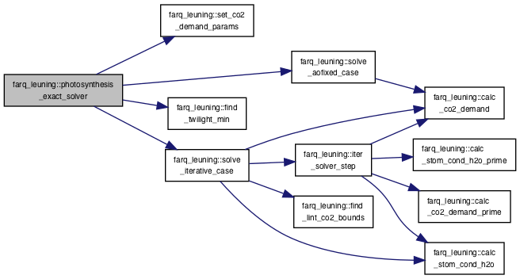
Here is the caller graph for this function:
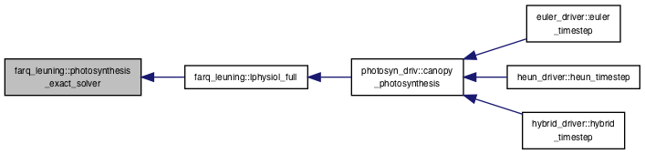
◆ set_co2_demand_params()
| subroutine farq_leuning::set_co2_demand_params | ( | character(len=*), intent(in) | whichlim | ) |
Here is the caller graph for this function:
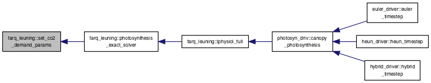
◆ solve_aofixed_case()
| subroutine farq_leuning::solve_aofixed_case | ( | type(solution_vars), intent(out) | answer, |
| logical, intent(out) | success | ||
| ) |
Here is the call graph for this function:
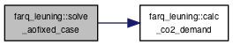
Here is the caller graph for this function:
◆ solve_iterative_case()
| subroutine farq_leuning::solve_iterative_case | ( | type(solution_vars), intent(out) | answer, |
| logical, intent(out) | converged | ||
| ) |
Here is the call graph for this function:
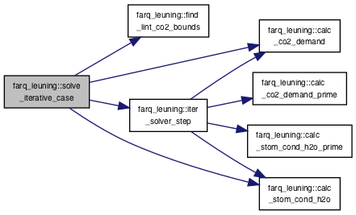
Here is the caller graph for this function:
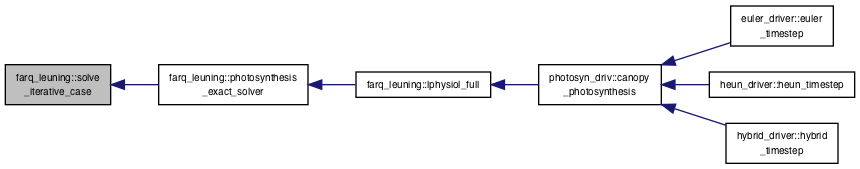
Variable Documentation
◆ discard
| real(kind=8), parameter farq_leuning::discard = huge(1.d0) |
◆ maxfpofl
| integer, parameter farq_leuning::maxfpofl = 320 |
◆ tolerfl8
| real(kind=8), parameter farq_leuning::tolerfl8 = toler8 |